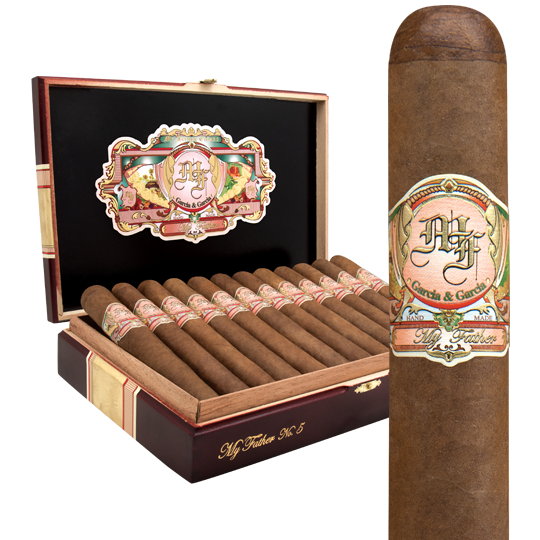

Don't use your dad's favorite cigars that he quietly stashes away in his “secret” hiding place. I do recommend that you use a good cigar though…you will taste it in the finished drink.
You don't have to use his favorite bourbon when you make this either. You'll definitely be elevating the flavor of whatever bourbon you use. But don't some cheap nasty tasty bourbon…it won't elevate it that much.
If you're able, make a single large ice cube to add to the glass, it adds a touch of class to the drink and it melts much more slowly than a bunch of small cubes.
Before lining the sieve with the cheesecloth, dampen it with water first (squeeze out the excess water first). By wetting the cheesecloth first, you'll keep the cheesecloth from absorbing your bourbon. You will have enough tobacco infused bourbon to make 4 drinks.
My Father is a wonderful cigar created by Jaime Garcia in dedication to his father, Jose “Pepin” Garcia. Handcrafted in Estelí, Nicaragua, My Father showcases a glorious Ecuador Habano wrapper and lovely blend of aged Nicaraguan tobaccos. Full-bodied in strength, these cigars offer an earthy core of flavor around which an enticing web of sweet cedar and nuts is spun. A peppery spice permeates every inch of this cigar and leaves your mouth watering when you finally nub it.
